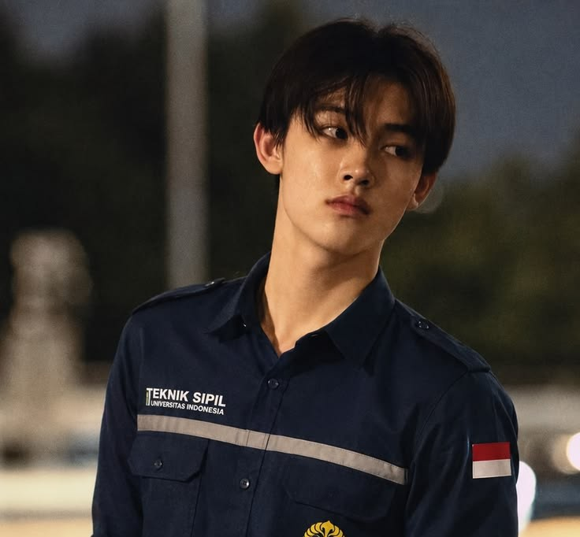
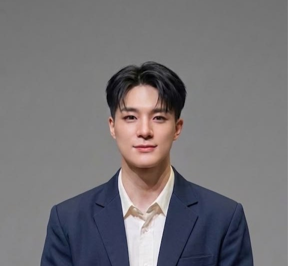
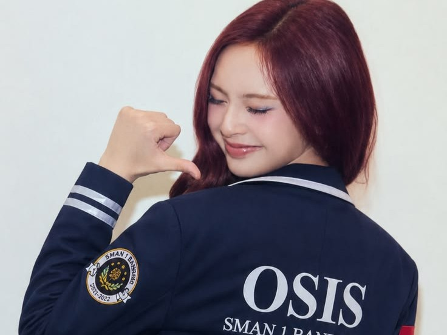

Founder & Chief Executive
Nayla Rizki Asri Ainun

Head of FABU (Forum Awardee Beasiswa Unggulan)
Aksa Damar Wicaksana

Head of Mentor Unggulan
Jendra Arya Pradipta

Coordinator of UKBI Center & Ruang Belajar
Naura Aluna Larasati